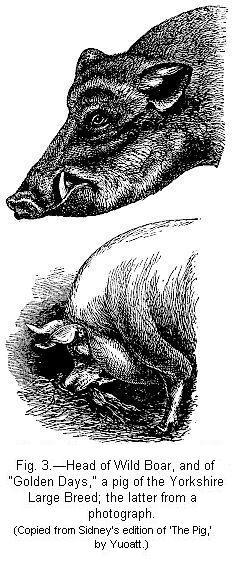

PIGS BELONG TO TWO DISTINCT TYPES, SUS SCROFA AND INDICUS — TORFSCHWEIN — JAPAN PIGS — FERTILITY OF CROSSED PIGS — CHANGES IN THE SKULL OF THE HIGHLY CULTIVATED RACES — CONVERGENCE OF CHARACTER — GESTATION — SOLID-HOOFED SWINE — CURIOUS APPENDAGES TO THE JAWS — DECREASE IN SIZE OF THE TUSKS — YOUNG PIGS LONGITUDINALLY STRIPED — FERAL PIGS — CROSSED BREEDS.
CATTLE — ZEBU A DISTINCT SPECIES — EUROPEAN CATTLE PROBABLY DESCENDED FROM THREE WILD FORMS — ALL THE RACES NOW FERTILE TOGETHER — BRITISH PARK CATTLE — ON THE COLOUR OF THE ABORIGINAL SPECIES — CONSTITUTIONAL DIFFERENCES — SOUTH AFRICAN RACES — SOUTH AMERICAN RACES — NIATA CATTLE — ORIGIN OF THE VARIOUS RACES OF CATTLE.
SHEEP — REMARKABLE RACES OF — VARIATIONS ATTACHED TO THE MALE SEX — ADAPTATIONS TO VARIOUS CONDITIONS — GESTATION OF — CHANGES IN THE WOOL — SEMI-MONSTROUS BREEDS.
GOATS — REMARKABLE VARIATIONS OF.
The breeds of the pig have recently been more closely studied, though much still remains to be done, than those of almost any other domesticated animal. This has been effected by Hermann von Nathusius in two admirable works, especially in the later one on the Skulls of the several races, and by Rütimeyer in his celebrated Fauna of the ancient Swiss lake-dwellings.1 Nathusius has shown that all the known breeds may be divided into two great groups: one resembling in all important respects and no doubt descended from the common wild boar; so that this may be called the Sus scrofa group. The other group differs in several important and constant osteological characters; its wild parent-form is unknown; the name given to it by Nathusius, according to the law of priority, is Sus indicus, of Pallas. This name must now be followed, though an unfortunate one, as the wild aboriginal does not inhabit India, and the best-known domesticated breeds have been imported from Siam and China.
First for the Sus scrofa breeds, or those resembling the common wild boar. These still exist, according to Nathusius ('Schweineschädel' s. 75), in various parts of central and northern Europe; formerly every kingdom,2 and almost every province in Britain, possessed its own native breed; but these are now everywhere rapidly disappearing, being replaced by improved breeds crossed with the S. indicus form. The skull in the breeds of the S. scrofa type resembles, in all important respects, that of the European wild boar; but it has become ('Schweineschädel' s. 63-68) higher and broader relatively to its length; and the hinder part is more upright. The differences, however, are all variable in degree. The breeds which thus resemble S. scrofa in their essential skull characters differ conspicuously from each other in other respects, as in the length of the ears and legs, curvature of the ribs, colour, hairiness, size and proportions of the body.
The wild Sus scrofa has a wide range, namely, Europe, North Africa, as identified by osteological characters by Rütimeyer, and Hindostan, as similarly identified by Nathusius. But the wild boars inhabiting these several countries differ so much from each other in external characters, that they have been ranked by some naturalists as specifically distinct. Even within Hindostan these animals, according to Mr. Blyth, form very distinct races in the different districts; in the N. Western provinces, as I am informed by the Rev. R. Everest, the boar never exceeds 36 inches in height, whilst in Bengal one has been measured 44 inches in height. In Europe, Northern Africa, and Hindostan, domestic pigs have been known to cross with the wild native species;3 and in Hindostan an accurate observer,4 Sir Walter Elliot, after describing the differences between wild Indian and wild German boars, remarks that "the same differences are perceptible in the domesticated individuals of the two countries." We may therefore conclude that the breeds of the Sus scrofa type are descended from, or have been modified by crossing with, forms which may be ranked as geographical races, but which, according to some naturalists, ought to be ranked as distinct species.
Pigs of the Sus indicus type are best known to Englishmen under the form of the Chinese breed. The skull of S. indicus, as described by Nathusius, differs from that of S. scrofa in several minor respects, as in its greater breadth and in some details in the teeth; but chiefly in the shortness of the lachrymal bones, in the greater width of the fore part of the palate-bones, and in the divergence of the premolar teeth. It deserves especial notice that these latter characters are not gained, even in the least degree, by the domesticated forms of S. scrofa. After reading the remarks and descriptions given by Nathusius, it seems to me to be merely playing with words to doubt whether S. indicus ought to be ranked as a species; for the above-specified differences are more strongly marked than any that can be pointed out between, for instance, the fox and the wolf, or the ass and the horse. As already stated, S. indicus is not known in a wild state; but its domesticated forms, according to Nathusius, come near to S. vittatus of Java and some allied species. A pig found wild in the Aru islands ('Schweineschädel' s. 169) is apparently identical with S. indicus; but it is doubtful whether this is a truly native animal. The domesticated breeds of China, Cochin-China, and Siam belong to this type. The Roman or Neapolitan breed, the Andalusian, the Hungarian, and the "Krause" swine of Nathusius, inhabiting south-eastern Europe and Turkey, and having fine curly hair, and the small Swiss "Bündtnerschwein" of Rütimeyer, all agree in their more important skull-characters with S. indicus, and, as is supposed, have all been largely crossed with this form. Pigs of this type have existed during a long period on the shores of the Mediterranean, for a figure ('Schweineschädel' s. 142) closely resembling the existing Neapolitan pig was found in the buried city of Herculaneum.
Rütimeyer has made the remarkable discovery that there lived contemporaneously in Switzerland, during the Neolithic period, two domesticated forms, the S. scrofa, and the S. scrofa palustris or Torfschwein. Rütimeyer perceived that the latter approached the Eastern breeds, and, according to Nathusius, it certainly belongs to the S. indicus group; but Rütimeyer has subsequently shown that it differs in some well-marked characters. This author was formerly convinced that his Torfschwein existed as a wild animal during the first part of the Stone period, and was domesticated during a later part of the same period.5 Nathusius, whilst he fully admits the curious fact first observed by Rütimeyer, that the bones of domesticated and wild animals can be distinguished by their different aspect, yet, from special difficulties in the case of the bones of the pig ('Schweineschädel' s. 147), is not convinced of the truth of the above conclusion; and Rütimeyer himself seems now to feel some doubt. Other naturalists have also argued strongly on the same side as Nathusius.6
Several breeds, differing in the proportions of the body, in the length of the ears, in the nature of the hair, in colour, etc., come under the S. indicus type. Nor is this surprising, considering how ancient the domestication of this form has been both in Europe and in China. In this latter country the date is believed by an eminent Chinese scholar7 to go back at least 4900 years from the present time. This same scholar alludes to the existence of many local varieties of the pig in China; and at the present time the Chinese take extraordinary pains in feeding and tending their pigs, not even allowing them to walk from place to place.8 Hence these pigs, as Nathusius has remarked,9 display in an eminent degree the characters of a highly-cultivated race, and hence, no doubt, their high value in the improvement of our European breeds. Nathusius makes a remarkable statement ('Schweineschädel' s. 138), that the infusion of the 1/32nd, or even of the 1/64th, part of the blood of S. indicus into a breed of S. scrofa, is sufficient plainly to modify the skull of the latter species. This singular fact may perhaps be accounted for by several of the chief distinctive characters of S. indicus, such as the shortness of the lachrymal bones, etc., being common to several species of the genus; for in crosses characters which are common to many species apparently tend to be prepotent over those appertaining to only a few species.
The Japan pig (S. pliciceps of Gray), which was formerly exhibited in the Zoological Gardens, has an extraordinary appearance from its short head, broad forehead and nose, great fleshy ears, and deeply furrowed skin. Figure 2 is copied from that given by Mr. Bartlett.10 Not only is the face furrowed, but thick folds of skin, which are harder than the other parts, almost like the plates on the Indian rhinoceros, hang about the shoulders and rump. It is coloured black, with white feet, and breeds true. That it has long been domesticated there can be little doubt; and this might have been inferred even from the fact that its young are not longitudinally striped; for this is a character common to all the species included within the genus Sus and the allied genera whilst in their natural state.11 Dr. Gray12 has described the skull of this animal, which he ranks not only as a distinct species, but places it in a distinct section of the genus. Nathusius, however, after his careful study of the whole group, states positively ('Schweineschädel' s. 153-158). that the skull in all essential characters closely resembles that of the short-eared Chinese breed of the S. indicus type. Hence Nathusius considers the Japan pig as only a domesticated variety of S. indicus: if this really be the case, it is a wonderful instance of the amount of modification which can be effected under domestication.
Formerly there existed in the central islands of the Pacific Ocean a singular breed of pigs. These are described by the Rev. D. Tyerman and G. Bennett13 as of small size, hump-backed, with a disproportionately long head, with short ears turned backwards, with a bushy tail not more than two inches in length, placed as if it grew from the back. Within half a century after the introduction of European and Chinese pigs into these islands, the native breed, according to the above authors, became almost completely lost by being repeatedly crossed with them. Secluded islands, as might have been expected, seem favourable for the production or retention of peculiar breeds; thus, in the Orkney Islands, the hogs have been described as very small, with erect and sharp ears, and "with an appearance altogether different from the hogs brought from the south."14
Seeing how different the Chinese pigs, belonging to the Sus indicus type, are in their osteological characters and in external appearance from the pigs of the S. scrofa type, so that they must be considered specifically distinct, it is a fact well deserving attention, that Chinese and common pigs have been repeatedly crossed in various manners, with unimpaired fertility. One great breeder who had used pure Chinese pigs assured me that the fertility of the half-breeds inter se and of their recrossed progeny was actually increased; and this is the general belief of agriculturists. Again, the Japan pig or S. pliciceps of Gray is so distinct in appearance from all common pigs, that it stretches one's belief to the utmost to admit that it is simply a domestic variety; yet this breed has been found perfectly fertile with the Berkshire breed; and Mr. Eyton informs me that he paired a half-bred brother and sister and found them quite fertile together.
The modification of the skull in the most highly cultivated races is wonderful. To appreciate the amount of change, Nathusius' work, with its excellent figures, should be studied. The whole of the exterior in all its parts has been altered: the hinder surface, instead of sloping backwards, is directed forwards, entailing many changes in other parts; the front of the head is deeply concave; the orbits have a different shape; the auditory meatus has a different direction and shape; the incisors of the upper and lower jaws do not touch each other, and they stand in both jaws beyond the plane of the molars; the canines of the upper jaw stand in front of those of the lower jaw, and this is a remarkable anomaly: the articular surfaces of the occipital condyles are so greatly changed in shape, that, as Nathusius remarks (s. 133), no naturalist, seeing this important part of the skull by itself, would suppose that it belonged to the genus Sus. These and various other modifications, as Nathusius observes, can hardly be considered as monstrosities, for they are not injurious, and are strictly inherited. The whole head is much shortened; thus, whilst in common breeds its length to that of the body is as 1 to 6, in the "cultur-racen" the proportion is as 1 to 9, and even recently as 1 to 11.15 The woodcut (Figure 3) of the head of a wild boar and of a sow from a photograph of the Yorkshire Large Breed, may aid in showing how greatly the head in a highly cultivated race has been modified and shortened.
Nathusius has well discussed the causes of the remarkable changes in the skull and shape of the body which the highly cultivated races have undergone. These modifications occur chiefly in the pure and crossed races of the S. indicus type; but their commencement may be clearly detected in the slightly improved breeds of the S. scrofa type.17 Nathusius states positively (s. 99, 103), as the result of common experience and of his experiments, that rich and abundant food, given during youth, tends by some direct action to make the head broader and shorter; and that poor food works a contrary result. He lays much stress on the fact that all wild and semi-domesticated pigs, in ploughing up the ground with their muzzles, have, whilst young, to exert the powerful muscles fixed to the hinder part of the head. In highly cultivated races this habit is no longer followed, and consequently the back of the skull becomes modified in shape, entailing other changes in other parts. There can hardly be a doubt that so great a change in habits would affect the skull; but it seems rather doubtful how far this will account for the greatly reduced length of the skull and for its concave front. It is well known (Nathusius himself advancing many cases, s. 104) that there is a strong tendency in many domestic animals—in bull- and pug-dogs, in the niata cattle, in sheep, in Polish fowls, short-faced tumbler pigeons, and in one variety of the carp—for the bones of the face to become greatly shortened. In the case of the dog, as H. Müller has shown, this seems caused by an abnormal state of the primordial cartilage. We may, however, readily admit that abundant and rich food supplied during many generations would give an inherited tendency to increased size of body, and that, from disuse, the limbs would become finer and shorter.18 We shall in a future chapter see also that the skull and limbs are apparently in some manner correlated, so that any change in the one tends to affect the other.
Nathusius has remarked, and the observation is an interesting one, that the peculiar form of the skull and body in the most highly cultivated races is not characteristic of any one race, but is common to all when improved up to the same standard. Thus the large-bodied, long-eared, English breeds with a convex back, and the small-bodied, short-eared, Chinese breeds with a concave back, when bred to the same state of perfection, nearly resemble each other in the form of the head and body. This result, it appears, is partly due to similar causes of change acting on the several races, and partly to man breeding the pig for one sole purpose, namely, for the greatest amount of flesh and fat; so that selection has always tended towards one and the same end. With most domestic animals the result of selection has been divergence of character, here it has been convergence.19
The nature of the food supplied during many generations has apparently affected the length of the intestines; for, according to Cuvier, their length to that of the body in the wild boar is as 9 to 1,—in the common domestic boar as 13·5 to 1,—and in the Siam breed as 16 to 1. In this latter breed the greater length may be due either to descent from a distinct species or to more ancient domestication. The number of mammæ vary, as does the period of gestation. The latest authority says21 that "the period averages from 17 to 20 weeks," but I think there must be some error in this statement: in M. Tessier's observations on 25 sows it varied from 109 to 123 days. The Rev. W. D. Fox has given me ten carefully recorded cases with well-bred pigs, in which the period varied from 101 to 116 days. According to Nathusius the period is shortest in the races which come early to maturity; but the course of their development does not appear to be actually shortened, for the young animal is born, judging from the state of the skull, less fully developed, or in a more embryonic condition,22 than in the case of common swine. In the highly cultivated and early matured races the teeth, also, are developed earlier.
The difference in the number of the vertebræ and ribs in different kinds of pigs, as observed by Mr. Eyton,23 and as given in the following table, has often been quoted. The African sow probably belongs to the S. scrofa type; and Mr. Eyton informs me that, since the publication of this paper, cross-bred animals from the African and English races were found by Lord Hill to be perfectly fertile.
| English Long-legged Male. |
African Female. |
Chinese Male. |
Wild Boar from Cuvier. |
French Domestic Boar, from Cuvier. |
|
| Dorsal vertebræ | 15 | 13 | 15 | 14 | 14 |
| Lumbar | 6 | 6 | 4 | 5 | 5 |
| Dorsal and lumbar together | 21 | 19 | 19 | 19 | 19 |
| Sacral | 5 | 5 | 4 | 4 | 4 |
| Total number of vertebræ | 26 | 24 | 23 | 23 | 23 |
Some semi-monstrous breeds deserve notice. From the time of Aristotle to the present time solid-hoofed swine have occasionally been observed in various parts of the world. Although this peculiarity is strongly inherited, it is hardly probable that all the animals with solid hoofs have descended from the same parents; it is more probable that the same peculiarity has reappeared at various times and places. Dr. Struthers has lately described and figured24 the structure of the feet; in both front and hind feet the distal phalanges of the two greater toes are represented by a single, great, hoof-bearing phalanx; and in the front feet, the middle phalanges are represented by a bone which is single towards the lower end, but bears two separate articulations towards the upper end. From other accounts it appears that an intermediate toe is likewise sometimes superadded.
Another curious anomaly is offered by the appendages, described by M. Eudes-Deslongchamps as often characterizing the Normandy pigs. These appendages are always attached to the same spot, to the corners of the jaw; they are cylindrical, about three inches in length, covered with bristles, and with a pencil of bristles rising out of a sinus on one side: they have a cartilaginous centre, with two small longitudinal muscles they occur either symmetrically on both sides of the face or on one side alone. Richardson figures them on the gaunt old "Irish Greyhound pig;" and Nathusius states that they occasionally appear in all the long eared races, but are not strictly inherited, for they occur or fail in animals of the same litter.25 As no wild pigs are known to have analogous appendages, we have at present no reason to suppose that their appearance is due to reversion; and if this be so, we are forced to admit that a somewhat complex, though apparently useless, structure may be suddenly developed without the aid of selection.
It is a remarkable fact that the boars of all domesticated breeds have much shorter tusks than wild boars. Many facts show that with many animals the state of the hair is much affected by exposure to, or protection from, climate; and as we see that the state of the hair and teeth are correlated in Turkish dogs (other analogous facts will be hereafter given), may we not venture to surmise that the reduction of the tusks in the domestic boar is related to his coat of bristles being diminished from living under shelter? On the other hand, as we shall immediately see, the tusks and bristles reappear with feral boars, which are no longer protected from the weather. It is not surprising that the tusks should be more affected than the other teeth; as parts developed to serve as secondary sexual characters are always liable to much variation.
It is a well-known fact that the young of wild European and Indian pigs,26 for the first six months, are longitudinally banded with light-coloured stripes. This character generally disappears under domestication. The Turkish domestic pigs, however, have striped young, as have those of Westphalia, "whatever may be their hue;"27 whether these latter pigs belong to the same curly-haired race as the Turkish swine, I do not know. The pigs which have run wild in Jamaica and the semi-feral pigs of New Granada, both those which are black and those which are black with a white band across the stomach, often extending over the back, have resumed this aboriginal character and produce longitudinally-striped young. This is likewise the case, at least occasionally, with the neglected pigs in the Zambesi settlement on the coast of Africa.28
The common belief that all domesticated animals, when they run wild, revert completely to the character of their parent-stock, is chiefly founded, as far as I can discover, on feral pigs. But even in this case the belief is not grounded on sufficient evidence; for the two main types, namely, S. scrofa and indicus, have not been distinguished. The young, as we have just seen, reacquire their longitudinal stripes, and the boars invariably reassume their tusks. They revert also in the general shape of their bodies, and in the length of their legs and muzzles, to the state of the wild animal, as might have been expected from the amount of exercise which they are compelled to take in search of food. In Jamaica the feral pigs do not acquire the full size of the European wild boar, "never attaining a greater height than 20 inches at the shoulder." In various countries they reassume their original bristly covering, but in different degrees, dependent on the climate; thus, according to Roulin, the semi-feral pigs in the hot valleys of New Granada are very scantily clothed; whereas, on the Paramos, at the height of 7000 to 8000 feet, they acquire a thick covering of wool lying under the bristles, like that on the truly wild pigs of France. These pigs on the Paramos are small and stunted. The wild boar of India is said to have the bristles at the end of its tail arranged like the plumes of an arrow, whilst the European boar has a simple tuft; and it is a curious fact that many, but not all, of the feral pigs in Jamaica, derived from a Spanish stock, have a plumed tail.29 With respect to colour, feral pigs generally revert to that of the wild boar; but in certain parts of S. America, as we have seen, some of the semi-feral pigs have a curious white band across their stomachs; and in certain other hot places the pigs are red, and this colour has likewise occasionally been observed in the feral pigs of Jamaica. From these several facts we see that with pigs when feral there is a strong tendency to revert to the wild type; but that this tendency is largely governed by the nature of the climate, amount of exercise, and other causes of change to which they have been subjected.
The last point worth notice is that we have unusually good evidence of breeds of pigs now keeping perfectly true, which have been formed by the crossing of several distinct breeds. The Improved Essex pigs, for instance, breed very true; but there is no doubt that they largely owe their present excellent qualities to crosses originally made by Lord Western with the Neapolitan race, and to subsequent crosses with the Berkshire breed (this also having been improved by Neapolitan crosses), and likewise, probably, with the Sussex breed.30 In breeds thus formed by complex crosses, the most careful and unremitting selection during many generations has been found to be indispensable. Chiefly in consequence of so much crossing, some well-known breeds have undergone rapid changes; thus, according to Nathusius,31 the Berkshire breed of 1780 is quite different from that of 1810; and, since this latter period, at least two distinct forms have borne the same name.
Domestic cattle are certainly the descendants of more than one wild form, in the same manner as has been shown to be the case with our dogs and pigs. Naturalists have generally made two main divisions of cattle: the humped kinds inhabiting tropical countries, called in India Zebus, to which the specific name of Bos indicus has been given; and the common non-humped cattle, generally included under the name of Bos taurus. The humped cattle were domesticated, as may be seen on the Egyptian monuments, at least as early as the twelfth dynasty, that is 2100 B.C. They differ from common cattle in various osteological characters, even in a greater degree, according to Rütimeyer,32 than do the fossil and prehistoric European species, namely, Bos primigenius and longifrons, from each other. They differ, also, as Mr. Blyth,33 who has particularly attended to this subject, remarks, in general configuration, in the shape of their ears, in the point where the dewlap commences, in the typical curvature of their horns, in their manner of carrying their heads when at rest, in their ordinary variations of colour, especially in the frequent presence of "nilgau-like markings on their feet," and "in the one being born with teeth protruding through the jaws, and the other not so." They have different habits, and their voice is entirely different. The humped cattle in India "seldom seek shade, and never go into the water and there stand knee-deep, like the cattle of Europe." They have run wild in parts of Oude and Rohilcund, and can maintain themselves in a region infested by tigers. They have given rise to many races differing greatly in size, in the presence of one or two humps, in length of horns, and other respects. Mr. Blyth sums up emphatically that the humped and humpless cattle must be considered as distinct species. When we consider the number of points in external structure and habits, independently of important osteological differences, in which they differ from each other; and that many of these points are not likely to have been affected by domestication, there can hardly be a doubt, notwithstanding the adverse opinion of some naturalists, that the humped and non-humped cattle must be ranked as specifically distinct.
The European breeds of humpless cattle are numerous. Professor Low enumerates 19 British breeds, only a few of which are identical with those on the Continent. Even the small Channel islands of Guernsey, Jersey, and Alderney possess their own sub-breeds;34 and these again differ from the cattle of the other British islands, such as Anglesea, and the western isles of Scotland. Desmarest, who paid attention to the subject, describes 15 French races, excluding sub-varieties and those imported from other countries. In other parts of Europe there are several distinct races, such as the pale-coloured Hungarian cattle, with their light and free step, and enormous horns sometimes measuring above five feet from tip to tip:35 the Podolian cattle also are remarkable from the height of their fore-quarters. In the most recent work on Cattle,36 engravings are given of fifty-five European breeds; it is, however, probable that several of these differ very little from each other, or are merely synonyms. It must not be supposed that numerous breeds of cattle exist only in long-civilised countries, for we shall presently see that several kinds are kept by the savages of Southern Africa.
With respect to the parentage of the several European breeds, we already know much from Nilsson's Memoir,37 and more especially from Rütimeyer's works and those of Boyd Dawkins. Two or three species or forms of Bos, closely allied to still living domestic races, have been found in the more recent tertiary deposits or amongst prehistoric remains in Europe. Following Rütimeyer, we have:—
Bos primigenius.This magnificent, well known species was domesticated in Switzerland during the Neolithic period; even at this early period it varied a little, having apparently been crossed with other races. Some of the larger races on the Continent, as the Friesland, etc., and the Pembroke race in England, closely resemble in essential structure B. primigenius, and no doubt are its descendants. This is likewise the opinion of Nilsson. Bos primigenius existed as a wild animal in Cæsar's time, and is now semi-wild, though much degenerated in size, in the park of Chillingham; for I am informed by Professor Rütimeyer, to whom Lord Tankerville sent a skull, that the Chillingham cattle are less altered from the true primigenius type than any other known breed.38
Bos trochoceros. This form is not included in the three species above mentioned, for it is now considered by Rütimeyer to be the female of an early domesticated form of B. primigenius, and as the progenitor of his frontosus race. I may add that specific names have been given to four other fossil oxen, now believed to be identical with B. primigenius.39
Bos longifrons (or brachyceros) of Owen.—This very distinct species was of small size, and had a short body with fine legs. According to Boyd Dawkins40 it was introduced as a domesticated animal into Britain at a very early period, and supplied food to the Roman legionaries.41 Some remains have been found in Ireland in certain crannoges, of which the dates are believed to be from 843-933 A.D.42 It was also the commonest form in a domesticated condition in Switzerland during the earliest part of the Neolithic period. Professor Owen43 thinks it probable that the Welsh and Highland cattle are descended from this form; as likewise is the case, according to Rütimeyer, with some of the existing Swiss breeds. These latter are of different shades of colour from light-grey to blackish-brown, with a lighter stripe along the spine, but they have no pure white marks. The cattle of North Wales and the Highlands, on the other hand, are generally black or dark-coloured.
Bos frontosus of Nilsson.—This species is allied to B. longifrons, and, according to the high authority of Mr. Boyd Dawkins, is identical with it, but in the opinion of some judges is distinct. Both co-existed in Scania during the same late geological period,44 and both have been found in the Irish crannoges.45 Nilsson believes that his B. frontosus may be the parent of the mountain cattle of Norway, which have a high protuberance on the skull between the base of the horns. As Professor Owen and others believe that the Scotch Highland cattle are descended from his B. longifrons, it is worth notice that a capable judge46 has remarked that he saw no cattle in Norway like the Highland breed, but that they more nearly resembled the Devonshire breed.
On the whole we may conclude, more especially from the researches of Boyd Dawkins, that European cattle are descended from two species; and there is no improbability in this fact, for the genus Bos readily yields to domestication. Besides these two species and the zebu, the yak, the gayal, and the arni47 (not to mention the buffalo or genus Bubalus) have been domesticated; making altogether six species of Bos. The zebu and the two European species are now extinct in a wild state. Although certain races of cattle were domesticated at a very ancient period in Europe, it does not follow that they were first domesticated here. Those who place much reliance on philology argue that they were imported from the East.48 It is probable that they originally inhabited a temperate or cold climate, but not a land long covered with snow; for our cattle, as we have seen in the chapter on Horses, have not the instinct of scraping away the snow to get at the herbage beneath. No one could behold the magnificent wild bulls on the bleak Falkland Islands in the southern hemisphere, and doubt about the climate being admirably suited to them. Azara has remarked that in the temperate regions of La Plata the cows conceive when two years old, whilst in the much hotter country of Paraguay they do not conceive till three years old; "from which fact," as he adds, "one may conclude that cattle do not succeed so well in warm countries."49
Bos primigenius and longifrons have been ranked by nearly all palæontologists as distinct species; and it would not be reasonable to take a different view simply because their domesticated descendants now intercross with the utmost freedom. All the European breeds have so often been crossed both intentionally and unintentionally, that, if any sterility had ensued from such unions, it would certainly have been detected. As zebus inhabit a distant and much hotter region, and as they differ in so many characters from our European cattle, I have taken pains to ascertain whether the two forms are fertile when crossed. The late Lord Powis imported some zebus and crossed them with common cattle in Shropshire; and I was assured by his steward that the cross-bred animals were perfectly fertile with both parent-stocks. Mr. Blyth informs me that in India hybrids, with various proportions of either blood, are quite fertile; and this can hardly fail to be known, for in some districts50 the two species are allowed to breed freely together. Most of the cattle which were first introduced into Tasmania were humped, so that at one time thousands of crossed animals existed there; and Mr. B. O'Neile Wilson, M.A., writes to me from Tasmania that he has never heard of any sterility having been observed. He himself formerly possessed a herd of such crossed cattle, and all were perfectly fertile; so much so, that he cannot remember even a single cow failing to calve. These several facts afford an important confirmation of the Pallasian doctrine that the descendants of species which when first domesticated would if crossed have been in all probability in some degree sterile, become perfectly fertile after a long course of domestication. In a future chapter we shall see that this doctrine throws some light on the difficult subject of Hybridism.
I have alluded to the cattle in Chillingham Park, which, according to Rütimeyer, have been very little changed from the Bos primigenius type. This park is so ancient that it is referred to in a record of the year 1220. The cattle in their instincts and habits are truly wild. They are white, with the inside of the ears reddish-brown, eyes rimmed with black, muzzles brown, hoofs black, and horns white tipped with black. Within a period of thirty-three years about a dozen calves were born with "brown and blue spots upon the cheeks or necks; but these, together with any defective animals, were always destroyed." According to Bewick, about the year 1770 some calves appeared with black ears; but these were also destroyed by the keeper, and black ears have not since reappeared. The wild white cattle in the Duke of Hamilton's park, where I have heard of the birth of a black calf, are said by Lord Tankerville to be inferior to those at Chillingham. The cattle kept until the year 1780 by the Duke of Queensberry, but now extinct, had their ears, muzzle, and orbits of the eyes black. Those which have existed from time immemorial at Chartley, closely resemble the cattle at Chillingham, but are larger, "with some small difference in the colour of the ears." "They frequently tend to become entirely black; and a singular superstition prevails in the vicinity that, when a black calf is born, some calamity impends over the noble house of Ferrers. All the black calves are destroyed." The cattle at Burton Constable in Yorkshire, now extinct, had ears, muzzle, and the tip of the tail black. Those at Gisburne, also in Yorkshire, are said by Bewick to have been sometimes without dark muzzles, with the inside alone of the ears brown; and they are elsewhere said to have been low in stature and hornless.51
The several above-specified differences in the park-cattle, slight though they be, are worth recording, as they show that animals living nearly in a state of nature, and exposed to nearly uniform conditions, if not allowed to roam freely and to cross with other herds, do not keep as uniform as truly wild animals. For the preservation of a uniform character, even within the same park, a certain degree of selection—that is, the destruction of the dark-coloured calves—is apparently necessary.
Boyd Dawkins believes that the park-cattle are descended from anciently domesticated, and not truly wild animals; and from the occasional appearance of dark-coloured calves, it is improbable that the aboriginal Bos primigenius was white. It is curious what a strong, though not invariable, tendency there is in wild or escaped cattle to become white with coloured ears, under widely different conditions of life. If the old writers Boethius and Leslie52 can be trusted, the wild cattle of Scotland were white and furnished with a great mane; but the colour of their ears is not mentioned. In Wales,53 during the tenth century, some of the cattle are described as being white with red ears. Four hundred cattle thus coloured were sent to King John; and an early record speaks of a hundred cattle with red ears having been demanded as a compensation for some offence, but, if the cattle were of a dark or black colour, 150 were to be presented. The black cattle of North Wales apparently belong, as we have seen, to the small longifrons type: and as the alternative was offered of either 150 dark cattle, or 100 white cattle with red ears, we may presume that the latter were the larger beasts, and probably belonged to the primigenius type. Youatt has remarked that at the present day, whenever cattle of the shorthorn breed are white, the extremities of their ears are more or less tinged with red.
The cattle which have run wild on the Pampas, in Texas, and in two parts of Africa, have become of a nearly uniform dark brownish-red.54 On the Ladrone Islands, in the Pacific Ocean, immense herds of cattle, which were wild in the year 1741, are described as "milk-white, except their ears, which are generally black."55 The Falkland Islands, situated far south, with all the conditions of life as different as it is possible to conceive from those of the Ladrones, offer a more interesting case. Cattle have run wild there during eighty or ninety years; and in the southern districts the animals are mostly white, with their feet, or whole heads, or only their ears black; but my informant, Admiral Sulivan,56 who long resided on these islands, does not believe that they are ever purely white. So that in these two archipelagos we see that the cattle tend to become white with coloured ears. In other parts of the Falkland Islands other colours prevail: near Port Pleasant brown is the common tint; round Mount Usborn, about half the animals in some of the herds were lead- or mouse-coloured, which elsewhere is an unusual tint. These latter cattle, though generally inhabiting high land, breed about a month earlier than the other cattle; and this circumstance would aid in keeping them distinct and in perpetuating a peculiar colour. It is worth recalling to mind that blue or lead-coloured marks have occasionally appeared on the white cattle of Chillingham. So plainly different were the colours of the wild herds in different parts of the Falkland Islands, that in hunting them, as Admiral Sulivan informs me, white spots in one district, and dark spots in another district, were always looked out for on the distant hills. In the intermediate districts, intermediate colours prevailed. Whatever the cause may be, this tendency in the wild cattle of the Falkland Islands, which are all descended from a few brought from La Plata, to break up into herds of three different colours, is an interesting fact.
Returning to the several British breeds, the conspicuous difference in general appearance between Shorthorns, Longhorns (now rarely seen), Herefords, Highland cattle, Alderneys, etc., must be familiar to every one. A part of this difference may be attributed to descent from primordially distinct species; but we may feel sure that there has been a considerable amount of variation. Even during the Neolithic period, the domestic cattle were to a certain extent variable. Within recent times most of the breeds have been modified by careful and methodical selection. How strongly the characters thus acquired are inherited, may be inferred from the prices realised by the improved breeds; even at the first sale of Colling's Shorthorns, eleven bulls reached an average of 214 pounds, and lately Shorthorn bulls have been sold for a thousand guineas, and have been exported to all quarters of the world.
Some constitutional differences may be here noticed. The Shorthorns arrive at maturity far earlier than the wilder breeds, such as those of Wales or the Highlands. This fact has been shown in an interesting manner by Mr. Simonds,57 who has given a table of the average period of their dentition, which proves that there is a difference of no less than six months in the appearance of the permanent incisors. The period of gestation, from observations made by Tessier on 1131 cows, varies to the extent of eighty-one days; and what is more interesting, M. Lefour affirms "that the period of gestation is longer in the large German cattle than in the smaller breeds."58 With respect to the period of conception, it seems certain that Alderney and Zetland cows often become pregnant earlier than other breeds.59 Lastly, as four fully developed mammæ is a generic character in the genus Bos,60 it is worth notice that with our domestic cows the two rudimentary mammæ often become fairly well developed and yield milk.
As numerous breeds are generally found only in long-civilised countries, it may be well to show that in some countries inhabited by barbarous races, who are frequently at war with each other, and therefore have little free communication, several distinct breeds of cattle now exist or formerly existed. At the Cape of Good Hope Leguat observed, in the year 1720, three kinds.61 At the present day various travellers have noticed the differences in the breeds in Southern Africa. Sir Andrew Smith several years ago remarked to me that the cattle possessed by the different tribes of Caffres, though living near each other under the same latitude and in the same kind of country, yet differed, and he expressed much surprise at the fact. Mr. Andersson has described62 the Damara, Bechuana, and Namaqua cattle; and he informs me in a letter that the cattle north of Lake Ngami are likewise different, as Mr. Galton has heard is also the case with the cattle of Benguela. The Namaqua cattle in size and shape nearly resemble European cattle, and have short stout horns and large hoofs. The Damara cattle are very peculiar, being big-boned, with slender legs, and small hard feet; their tails are adorned with a tuft of long bushy hair nearly touching the ground, and their horns are extraordinarily large. The Bechuana cattle have even larger horns, and there is now a skull in London with the two horns 8 ft. 8-1/4 in. long, as measured in a straight line from tip to tip, and no less than 13 ft. 5 in. as measured along their curvature! Mr. Andersson in his letter to me says that, though he will not venture to describe the differences between the breeds belonging to the many different sub-tribes, yet such certainly exist, as shown by the wonderful facility with which the natives discriminate them.
That many breeds of cattle have originated through variation, independently of descent from distinct species, we may infer from what we see in South America, where the genus Bos was not endemic, and where the cattle which now exist in such vast numbers are the descendants of a few imported from Spain and Portugal. In Columbia, Roulin63 describes two peculiar breeds, namely, pelones, with extremely thin and fine hair, and calongos, absolutely naked. According to Castelnau there are two races in Brazil, one like European cattle, the other different, with remarkable horns. In Paraguay, Azara describes a breed which certainly originated in S. America, called chivos, "because they have straight vertical horns, conical, and very large at the base." He likewise describes a dwarf race in Corrientes, with short legs and a body larger than usual. Cattle without horns, and others with reversed hair, have also originated in Paraguay.
Another monstrous breed, called niatas or natas, of which I saw two small herds on the northern bank of the Plata, is so remarkable as to deserve a fuller description. This breed bears the same relation to other breeds, as bull or pug dogs do to other dogs, or as improved pigs, according to H. von Nathusius, do to common pigs.64 Rütimeyer believes that these cattle belong to the primigenius type.65 The forehead is very short and broad, with the nasal end of the skull, together with the whole plane of the upper molar-teeth, curved upwards. The lower jaw projects beyond the upper, and has a corresponding upward curvature. It is an interesting fact that an almost similar confirmation characterizes, as I am informed by Dr. Falconer, the extinct and gigantic Sivatherium of India, and is not known in any other ruminant. The upper lip is much drawn back, the nostrils are seated high up and are widely open, the eyes project outwards, and the horns are large. In walking the head is carried low, and the neck is short. The hind legs appear to be longer, compared with the front legs, than is usual. The exposed incisor teeth, the short head and upturned nostrils, give these cattle the most ludicrous, self-confident air of defiance. The skull which I presented to the College of Surgeons has been thus described by Professor Owen:66 "It is remarkable from the stunted development of the nasals, premaxillaries, and fore-part of the lower jaw, which is unusually curved upwards to come into contact with the premaxillaries. The nasal bones are about one-third the ordinary length, but retain almost their normal breadth. The triangular vacuity is left between them, the frontal and lachrymal, which latter bone articulates with the premaxillary, and thus excludes the maxillary from any junction with the nasal." So that even the connexion of some of the bones is changed. Other differences might be added: thus the plane of the condyles is somewhat modified, and the terminal edge of the premaxillaries forms an arch. In fact, on comparison with the skull of a common ox, scarcely a single bone presents the same exact shape, and the whole skull has a wonderfully different appearance.
The first brief published notice of this race was by Azara, between the years 1783-96; but Don F. Muniz, of Luxan, who has kindly collected information for me, states that about 1760 these cattle were kept as curiosities near Buenos Ayres. Their origin is not positively known, but they must have originated subsequently to the year 1552, when cattle were first introduced. Senor Muniz informs me that the breed is believed to have originated with the Indians southward of the Plata. Even to this day those reared near the Plata show their less civilised nature in being fiercer than common cattle, and in the cow, if visited too often, easily deserting her first calf. The breed is very true, and a niata bull and cow invariably produce niata calves. The breed has already lasted at least a century. A niata bull crossed with a common cow, and the reverse cross, yield offspring having an intermediate character, but with the niata character strongly displayed. According to Senor Muniz, there is the clearest evidence, contrary to the common belief of agriculturists in analogous cases, that the niata cow when crossed with a common bull transmits her peculiarities more strongly than does the niata bull when crossed with a common cow. When the pasture is tolerably long, these cattle feed as well as common cattle with their tongue and palate; but during the great droughts, when so many animals perish on the Pampas, the niata breed lies under a great disadvantage, and would, if not attended to, become extinct; for the common cattle, like horses, are able to keep alive by browsing with their lips on the twigs of trees and on reeds: this the niatas cannot so well do, as their lips do not join, and hence they are found to perish before the common cattle. This strikes me as a good illustration of how little we are able to judge from the ordinary habits of an animal, on what circumstances, occurring only at long intervals of time, its rarity or extinction may depend. It shows us, also, how natural selection would have determined the rejection of the niata modification had it arisen in a state of nature.
Having described the semi-monstrous niata breed, I may allude to a white bull, said to have been brought from Africa, which was exhibited in London in 1829, and which has been well figured by Mr. Harvey.67 It had a hump, and was furnished with a mane. The dewlap was peculiar, being divided between its fore-legs into parallel divisions. Its lateral hoofs were annually shed, and grew to the length of five or six inches. The eye was very peculiar, being remarkably prominent, and "resembled a cup and ball, thus enabling the animal to see on all sides with equal ease; the pupil was small and oval, or rather a parallelogram with the ends cut off, and lying transversely across the ball." A new and strange breed might probably have been formed by careful breeding and selection from this animal.
I have often speculated on the probable causes through which each separate district in Great Britain came to possess in former times its own peculiar breed of cattle; and the question is, perhaps, even more perplexing in the case of Southern Africa. We now know that the differences may be in part attributed to descent from distinct species; but this cause is far from sufficient. Have the slight differences in climate and in the nature of the pasture, in the different districts of Britain, directly induced corresponding differences in the cattle? We have seen that the semi-wild cattle in the several British parks are not identical in colouring or size, and that some degree of selection has been requisite to keep them true. It is almost certain that abundant food given during many generations directly affects the size of a breed.68 That climate directly affects the thickness of the skin and the hair is likewise certain: thus Roulin asserts69 that the hides of the feral cattle on the hot Llanos "are always much less heavy than those of the cattle raised on the high platform of Bogota; and that these hides yield in weight and in thickness of hair to those of the cattle which have run wild on the lofty Paramos." The same difference has been observed in the hides of the cattle reared on the bleak Falkland Islands and on the temperate Pampas. Low has remarked70 that the cattle which inhabit the more humid parts of Britain have longer hair and thicker skins than other British cattle. When we compare highly improved stall-fed cattle with the wilder breeds, or compare mountain and lowland breeds, we cannot doubt that an active life, leading to the free use of the limbs and lungs, affects the shape and proportions of the whole body. It is probable that some breeds, such as the semi-monstrous niata cattle, and some peculiarities, such as being hornless, etc., have appeared suddenly owing to what we may call in our ignorance spontaneous variation; but even in this case a rude kind of selection is necessary, and the animals thus characterised must be at least partially separated from others. This degree of care, however, has sometimes been taken even in little-civilised districts, where we should least have expected it, as in the case of the niata, chivo, and hornless cattle in S. America.
That methodical selection has done wonders within a recent period in modifying our cattle, no one doubts. During the process of methodical selection it has occasionally happened that deviations of structure, more strongly pronounced than mere individual differences, yet by no means deserving to be called monstrosities, have been taken advantage of: thus the famous Longhorn Bull, Shakespeare, though of the pure Canley stock, "scarcely inherited a single point of the long-horned breed, his horns excepted; yet in the hands of Mr. Fowler, this bull greatly improved his race. We have also reason to believe that selection, carried on so far unconsciously that there was at no one time any distinct intention to improve or change the breed, has in the course of time modified most of our cattle; for by this process, aided by more abundant food, all the lowland British breeds have increased greatly in size and in early maturity since the reign of Henry VII.72 It should never be forgotten that many animals have to be annually slaughtered; so that each owner must determine which shall be killed and which preserved for breeding. In every district, as Youatt has remarked, there is a prejudice in favour of the native breed; so that animals possessing qualities, whatever they may be, which are most valued in each district, will be oftenest preserved; and this unmethodical selection assuredly will in the long run affect the character of the whole breed. But it may be asked, can this rude kind of selection have been practised by barbarians such as those of southern Africa? In a future chapter on Selection we shall see that this has certainly occurred to some extent. Therefore, looking to the origin of the many breeds of cattle which formerly inhabited the several districts of Britain, I conclude that, although slight differences in the nature of the climate, food, etc., as well as changed habits of life, aided by correlation of growth, and the occasional appearance from unknown causes of considerable deviations of structure, have all probably played their parts; yet that the occasional preservation in each district of those individual animals which were most valued by each owner has perhaps been even more effective in the production of the several British breeds. As soon as two or more breeds were formed in any district, or when new breeds descended from distinct species were introduced, their crossing, especially if aided by some selection, will have multiplied the number and modified the characters of the older breeds.
I shall treat this subject briefly. Most authors look at our domestic sheep as descended from several distinct species. Mr. Blyth, who has carefully attended to the subject, believes that fourteen wild species now exist, but "that not one of them can be identified as the progenitor of any one of the interminable domestic races." M. Gervais thinks that there are six species of Ovis,73 but that our domestic sheep form a distinct genus, now completely extinct. A German naturalist74 believes that our sheep descend from ten aboriginally distinct species, of which only one is still living in a wild state! Another ingenious observer,75 though not a naturalist, with a bold defiance of everything known on geographical distribution, infers that the sheep of Great Britain alone are the descendants of eleven endemic British forms! Under such a hopeless state of doubt it would be useless for my purpose to give a detailed account of the several breeds; but a few remarks may be added.
Sheep have been domesticated from a very ancient period. Rütimeyer76 found in the Swiss lake-dwellings the remains of a small breed, with thin tall legs, and horns like those of a goat, thus differing somewhat from any kind now known. Almost every country has its own peculiar breed; and many countries have several breeds differing greatly from each other. One of the most strongly marked races is an Eastern one with a long tail, including, according to Pallas, twenty vertebræ, and so loaded with fat that it is sometimes placed on a truck, which is dragged about by the living animal. These sheep, though ranked by Fitzinger as a distinct aboriginal form, bear in their drooping ears the stamp of long domestication. This is likewise the case with those sheep which have two great masses of fat on the rump, with the tail in a rudimentary condition. The Angola variety of the long-tailed race has curious masses of fat on the back of the head and beneath the jaws.77 Mr. Hodgson in an admirable paper78 on the sheep of the Himalaya infers from the distribution of the several races, "that this caudal augmentation in most of its phases is an instance of degeneracy in these pre-eminently Alpine animals." The horns present an endless diversity in character; being not rarely absent, especially in the female sex, or, on the other hand, amounting to four or even eight in number. The horns, when numerous, arise from a crest on the frontal bone, which is elevated in a peculiar manner. It is remarkable that multiplicity of horns "is generally accompanied by great length and coarseness of the fleece."79 This correlation, however, is far from being general; for instance, I am informed by Mr. D. Forbes, that the Spanish sheep in Chile resemble, in fleece and in all other characters, their parent merino-race, except that instead of a pair they generally bear four horns. The existence of a pair of mammæ is a generic character in the genus Ovis as well as in several allied forms; nevertheless, as Mr. Hodgson has remarked, "this character is not absolutely constant even among the true and proper sheep: for I have more than once met with Cágias (a sub-Himalayan domestic race) possessed of four teats."80 This case is the more remarkable as, when any part or organ is present in reduced number in comparison with the same part in allied groups, it usually is subject to little variation. The presence of interdigital pits has likewise been considered as a generic distinction in sheep; but Isidore Geoffroy81 has shown that these pits or pouches are absent in some breeds.
In sheep there is a strong tendency for characters, which have apparently been acquired under domestication, to become attached either exclusively to the male sex, or to be more highly developed in this than in the other sex. Thus in many breeds the horns are deficient in the ewe, though this likewise occurs occasionally with the female of the wild musmon. In the rams of the Wallachian breed, "the horns spring almost perpendicularly from the frontal bone, and then take a beautiful spiral form; in the ewes they protrude nearly at right angles from the head, and then become twisted in a singular manner."82 Mr. Hodgson states that the extraordinarily arched nose or chaffron, which is so highly developed in several foreign breeds, is characteristic of the ram alone, and apparently is the result of domestication.83 I hear from Mr. Blyth that the accumulation of fat in the fat-tailed sheep of the plains of India is greater in the male than in the female; and Fitzinger84 remarks that the mane in the African maned race is far more developed in the ram than in the ewe.
Different races of sheep, like cattle, present constitutional differences. Thus the improved breeds arrive at maturity at an early age, as has been well shown by Mr. Simonds through their early average period of dentition. The several races have become adapted to different kinds of pasture and climate: for instance, no one can rear Leicester sheep on mountainous regions, where Cheviots flourish. As Youatt has remarked, "In all the different districts of Great Britain we find various breeds of sheep beautifully adapted to the locality which they occupy. No one knows their origin; they are indigenous to the soil, climate, pasturage, and the locality on which they graze; they seem to have been formed for it and by it."85 Marshall relates86 that a flock of heavy Lincolnshire and light Norfolk sheep which had been bred together in a large sheep-walk, part of which was low, rich, and moist, and another part high and dry, with benty grass, when turned out, regularly separated from each other; the heavy sheep drawing off to the rich soil, and the lighter sheep to their own soil; so that "whilst there was plenty of grass the two breeds kept themselves as distinct as rooks and pigeons." Numerous sheep from various parts of the world have been brought during a long course of years to the Zoological Gardens of London; but as Youatt, who attended the animals as a veterinary surgeon, remarks, "few or none die of the rot, but they are phthisical; not one of them from a torrid climate lasts out the second year, and when they die their lungs are tuberculated."87 There is very good evidence that English breeds of sheep will not succeed in France.88 Even in certain parts of England it has been found impossible to keep certain breeds of sheep; thus on a farm on the banks of the Ouse, the Leicester sheep were so rapidly destroyed by pleuritis89 that the owner could not keep them; the coarser-skinned sheep never being affected.
The period of gestation was formerly thought to be of so unalterable a character, that a supposed difference of this kind between the wolf and the dog was esteemed a sure sign of specific distinction; but we have seen that the period is shorter in the improved breeds of the pig, and in the larger breeds of the ox, than in other breeds of these two animals. And now we know, on the excellent authority of Hermann von Nathusius,90 that Merino and Southdown sheep, when both have long been kept under exactly the same conditions, differ in their average period of gestation, as is seen in the following Table:—
| Merinos | 150·3 days. |
| Southdowns | 144·2 days. |
| Half-bred Merinos and Southdowns | 146·3 days. |
| 3/4 blood of Southdown | 145·5 days. |
| 7/8 blood of Southdown | 144·2 days. |
In this graduated difference in cross-bred animals having different proportions of Southdown blood, we see how strictly the two periods of gestation have been transmitted. Nathusius remarks that, as Southdowns grow with remarkable rapidity after birth, it is not surprising that their foetal development should have been shortened. It is of course possible that the difference in these two breeds may be due to their descent from distinct parent-species; but as the early maturity of the Southdowns has long been carefully attended to by breeders, the difference is more probably the result of such attention. Lastly, the fecundity of the several breeds differs much; some generally producing twins or even triplets at a birth, of which fact the curious Shangai sheep (with their truncated and rudimentary ears, and great Roman noses), lately exhibited in the Zoological Gardens, offer a remarkable instance.
Sheep are perhaps more readily affected by the direct action of the conditions of life to which they have been exposed than almost any other domestic animal. According to Pallas, and more recently according to Erman, the fat-tailed Kirghisian sheep, when bred for a few generations in Russia, degenerate, and the mass of fat dwindles away, "the scanty and bitter herbage of the steppes seems so essential to their development." Pallas makes an analogous statement with respect to one of the Crimean breeds. Burnes states that the Karakool breed, which produces a fine, curled, black, and valuable fleece, when removed from its own canton near Bokhara to Persia or to other quarters, loses its peculiar fleece.91 In all such cases, however, it may be that a change of any kind in the conditions of life causes variability and consequent loss of character, and not that certain conditions are necessary for the development of certain characters.
Great heat, however, seems to act directly on the fleece: several accounts have been published of the change which sheep imported from Europe undergo in the West Indies. Dr. Nicholson of Antigua informs me that, after the third generation, the wool disappears from the whole body, except over the loins; and the animal then appears like a goat with a dirty door-mat on its back. A similar change is said to take place on the west coast of Africa.92 On the other hand, many wool-bearing sheep live on the hot plains of India. Roulin asserts that in the lower and heated valleys of the Cordillera, if the lambs are sheared as soon as the wool has grown to a certain thickness, all goes on afterwards as usual; but if not sheared, the wool detaches itself in flakes, and short shining hair like that on a goat is produced ever afterwards. This curious result seems merely to be an exaggerated tendency natural to the Merino breed, for as a great authority, namely, Lord Somerville, remarks, "the wool of our Merino sheep after shear-time is hard and coarse to such a degree as to render it almost impossible to suppose that the same animal could bear wool so opposite in quality, compared to that which has been clipped from it: as the cold weather advances, the fleeces recover their soft quality." As in sheep of all breeds the fleece naturally consists of longer and coarser hair covering shorter and softer wool, the change which it often undergoes in hot climates is probably merely a case of unequal development; for even with those sheep which like goats are covered with hair, a small quantity of underlying wool may always be found.93 In the wild mountain-sheep (0vis montana) of North America there is an analogous annual change of coat; "the wool begins to drop out in early spring, leaving in its place a coat of hair resembling that of the elk, a change of pelage quite different in character from the ordinary thickening of the coat or hair, common to all furred animals in winter,—for instance, in the horse, the cow, etc., which shed their winter coat in the spring."94
A slight difference in climate or pasture sometimes slightly affects the fleece, as has been observed even in different districts in England, and is well shown by the great softness of the wool brought from Southern Australia. But it should be observed, as Youatt repeatedly insists, that the tendency to change may generally be counteracted by careful selection. M. Lasterye, after discussing this subject, sums up as follows: "The preservation of the Merino race in its utmost purity at the Cape of Good Hope, in the marshes of Holland, and under the rigorous climate of Sweden, furnishes an additional support of this my unalterable principle, that fine-woolled sheep may be kept wherever industrious men and intelligent breeders exist."
That methodical selection has effected great changes in several breeds of sheep no one who knows anything on the subject, entertains a doubt. The case of the Southdowns, as improved by Ellman, offers perhaps the most striking instance. Unconscious or occasional selection has likewise slowly produced a great effect, as we shall see in the chapters on Selection. That crossing has largely modified some breeds, no one who will study what has been written on this subject—for instance, Mr. Spooner's paper—will dispute; but to produce uniformity in a crossed breed, careful selection and "rigorous weeding," as this author expresses it, are indispensable.95
In some few instances new breeds have suddenly originated; thus, in 1791, a ram-lamb was born in Massachusetts, having short crooked legs and a long back, like a turnspit-dog. From this one lamb the otter or ancon semi-monstrous breed was raised; as these sheep could not leap over the fences, it was thought that they would be valuable; but they have been supplanted by merinos, and thus exterminated. The sheep are remarkable from transmitting their character so truly that Colonel Humphreys96 never heard of "but one questionable case" of an ancon ram and ewe not producing ancon offspring. When they are crossed with other breeds the offspring, with rare exceptions, instead of being intermediate in character, perfectly resemble either parent; even one of twins has resembled one parent and the second the other. Lastly, "the ancons have been observed to keep together, separating themselves from the rest of the flock when put into enclosures with other sheep."
A more interesting case has been recorded in the Report of the Juries for the Great Exhibition (1851), namely, the production of a merino ram-lamb on the Mauchamp farm, in 1828, which was remarkable for its long, smooth, straight, and silky wool. By the year 1833 M. Graux had raised rams enough to serve his whole flock, and after a few more years he was able to sell stock of his new breed. So peculiar and valuable is the wool, that it sells at 25 per cent above the best merino wool: even the fleeces of half-bred animals are valuable, and are known in France as the "Mauchamp-merino." It is interesting, as showing how generally any marked deviation of structure is accompanied by other deviations, that the first ram and his immediate offspring were of small size, with large heads, long necks, narrow chests, and long flanks; but these blemishes were removed by judicious crosses and selection. The long smooth wool was also correlated with smooth horns; and as horns and hair are homologous structures, we can understand the meaning of this correlation. If the Mauchamp and ancon breeds had originated a century or two ago, we should have had no record of their birth; and many a naturalist would no doubt have insisted, especially in the case of the Mauchamp race, that they had each descended from, or been crossed with, some unknown aboriginal form.
From the recent researches of M. Brandt, most naturalists now believe that all our goats are descended from the Capra ægagrus of the mountains of Asia, possibly mingled with the allied Indian species C. falconeri of India.97 In Switzerland, during the neolithic period, the domestic goat was commoner than the sheep; and this very ancient race differed in no respect from that now common in Switzerland.98 At the present time, the many races found in several parts of the world differ greatly from each other; nevertheless, as far as they have been tried,99 they are all quite fertile when crossed. So numerous are the breeds, that Mr. G. Clark100 has described eight distinct kinds imported into the one island of Mauritius. The ears of one kind were enormously developed, being, as measured by Mr. Clark, no less than 19 inches in length and 4-3/4 inches in breadth. As with cattle, the mammæ of those breeds which are regularly milked become greatly developed; and, as Mr. Clark remarks, "it is not rare to see their teats touching the ground." The following cases are worth notice as presenting unusual points of variation. According to Godron,101 the mammæ differ greatly in shape in different breeds, being elongated in the common goat, hemispherical in the Angora race, and bilobed and divergent in the goats of Syria and Nubia. According to this same author, the males of certain breeds have lost their usual offensive odour. In one of the Indian breeds the males and females have horns of widely-different shapes;102 and in some breeds the females are destitute of horns.103 M. Ramu of Nancy informs me that many of the goats there bear on the upper part of the throat a pair of hairy appendages, 70 mm. in length and about 10 mm. in diameter, which in external appearance resemble those above described on the jaws of pigs. The presence of inter-digital pits or glands on all four feet has been thought to characterise the genus Ovis, and their absence to be characteristic of the genus Capra; but Mr. Hodgson has found that they exist in the front feet of the majority of Himalayan goats.104 Mr. Hodgson measured the intestines in two goats of the Dúgú race, and he found that the proportional length of the great and small intestines differed considerably. In one of these goats the cæcum was thirteen inches, and in the other no less than thirty-six inches in length!
REFERENCES